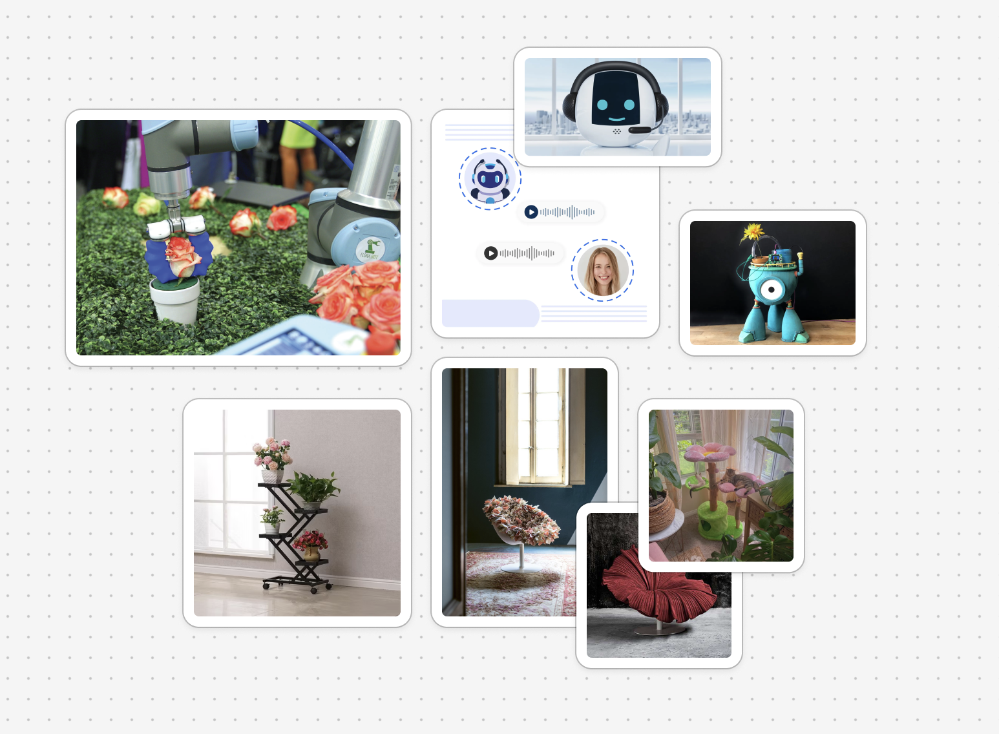
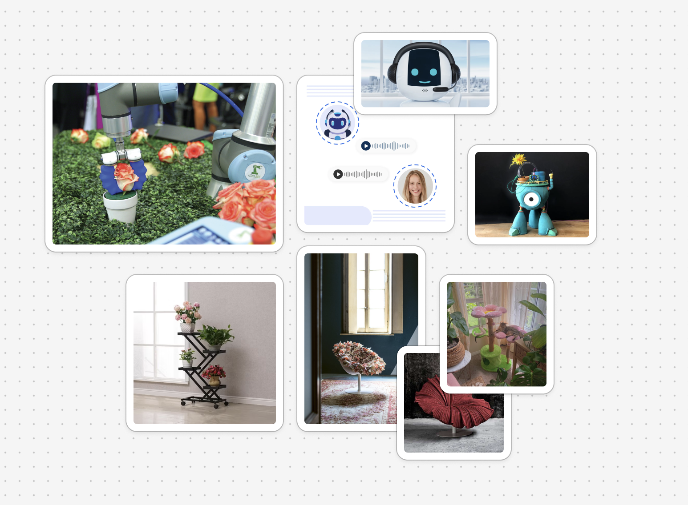

COMPLIMENT BOT

RESEARCH QUESTION
1. Can plants tell the difference between kind and unkind words?
2. How can we design interactive systems that encourage and amplify the use of small, positive compliments in everyday communication?
3. Can visual feedback systems (e.g., a glowing flower) incentivize people to use more positive language in daily life? KEYWORDS
Affective Comuting, Human-Technology Interaction, Compliments, Emotional Feedback, Interactive Art, Socio-Technical Systems3 INTERSECTING FIELDS
1. Can plants tell the difference between kind and unkind words?
2. How can we design interactive systems that encourage and amplify the use of small, positive compliments in everyday communication?
3. Can visual feedback systems (e.g., a glowing flower) incentivize people to use more positive language in daily life? KEYWORDS
Affective Comuting, Human-Technology Interaction, Compliments, Emotional Feedback, Interactive Art, Socio-Technical Systems
-
Human-Computer Interaction, Emotional Computing, Speculative Design
HISTORICAL LINEAGE
Experiential art and cybernetic sculpture traditions of the 1960s and 70s, such as Edward Ihnatowicz’s The Senster or Nam June Paik’s interactive installations, which merged technology, motion, and viewer interaction to provoke emotional or intellectual response.
COMMUNITY OF PRACTICE
I align with her emphasis on care and relationality, though my project shifts the focus from anthropomorphized AI to emotional resonance in non-human forms (plants, furniture, environment).

Project Florence - Microsoft
A speculative interface for “communicating” with plants using machine learning and natural language processing. It reflects a techno-optimist vision of plant-machine-human symbiosis.
I offer a softer critique of this vision rather than enabling plants to “speak,” I use the metaphor of the plant as a reflective surface for human language and behavior, asking what it means to project emotional needs onto nature.

I offer a softer critique of this vision rather than enabling plants to “speak,” I use the metaphor of the plant as a reflective surface for human language and behavior, asking what it means to project emotional needs onto nature.
Weizman & Fuller’s Investigative Aesthetics taught me that aesthetics can uncover truths. My project uses light and interaction to make emotional energy—something invisible—more noticeable. It's like asking: What if emotional care was something you could see?
Radical Friends helped me see how technology can be about friendship, not control. The flower bot listens to kind words and responds—not to measure or judge, but simply to reflect that someone spoke gently. It’s like a quiet friend in the corner of the room, always there.
Trebor Scholz and Craig Gent talk about how platforms take our emotional energy (likes, posts, praise) and turn it into profit. This project resists that. It doesn’t record, measure, or sell anything. It just listens. It reminds us that not everything kind needs to be monetized.
The Critical Engineering Manifesto reminded me that how we build matters. I chose to use open tools—Arduino, p5.js—not just because they’re accessible, but because I believe design should be shared and understandable. No hidden code, no closed box.
This project isn’t an attack or rejection—it’s a quiet alternative. With my work, I hope to remind people, gently, that small compliments can change the energy in a room. Additionally, if we start to notice those small things more, we’ll treat each other—and our tools—with more care.
Radical Friends helped me see how technology can be about friendship, not control. The flower bot listens to kind words and responds—not to measure or judge, but simply to reflect that someone spoke gently. It’s like a quiet friend in the corner of the room, always there.
Trebor Scholz and Craig Gent talk about how platforms take our emotional energy (likes, posts, praise) and turn it into profit. This project resists that. It doesn’t record, measure, or sell anything. It just listens. It reminds us that not everything kind needs to be monetized.
The Critical Engineering Manifesto reminded me that how we build matters. I chose to use open tools—Arduino, p5.js—not just because they’re accessible, but because I believe design should be shared and understandable. No hidden code, no closed box.
This project isn’t an attack or rejection—it’s a quiet alternative. With my work, I hope to remind people, gently, that small compliments can change the energy in a room. Additionally, if we start to notice those small things more, we’ll treat each other—and our tools—with more care.
METHODS p5.js, p5.speech Library, Arduino (controlling LEDs), Serial communication json data file of positive words/compliment word list Inspired by speculative design and empathy-centered tech—not about solving problems but asking better questions. Mostly qualitative - I'm not testing hypothesis or collecting metrics. I'm interested in how people feel when they interact with the piece. My plan is to observe reactions, collect open-ended feedback, and look for emotional cues.
Aesthetic & Emotional – how it looks and feels is key
Computational – speech input + glowing output = the interaction loop
Physical & Material – the flower itself must feel present, delicate, alive
Conceptual – it carries a message about language, kindness, and presence
COMPUTATIONAL DESIGN EXPERIENCES

I'm hoping to build the sculpture into a furniture that blooms/glows up when it hears a compliment. I have different ideas for its design, but I'm primarily hoping to make it to be a furniture that could possibly work as a lamp.
COMPUTATIONAL DESIGN EXPERIENCES

I'm hoping to build the sculpture into a furniture that blooms/glows up when it hears a compliment. I have different ideas for its design, but I'm primarily hoping to make it to be a furniture that could possibly work as a lamp.
VISUAL REPRESENTATION
When I think about aesthetics as part of my practice, I don’t just see it as “how something looks”—I see it as how something feels and how it invites someone in. The aesthetic modes that inspire me most are soft, poetic, and slightly surreal—things that make you pause, not because they’re loud, but because they’re tender. I’m drawn to light, slow movement, organic forms, and quiet interactions that create a sense of presence or care.
I use aesthetics to make invisible things, such as emotion, attention, or kindness feel more tangible. With my Compliment Bot, for example, I hope to use a glowing flower to show how a compliment can change a space. It’s not about telling people what to think, but helping them feel something they might not have noticed otherwise. That feeling is part of the argument.
My visual language leans toward softness and intimacy. I often work with light, fabric, translucent textures, hand-built forms, and gentle motion. Even when working with p5.js, Arduino, digital sensors, I hope to try to hide the mechanics and foreground the affect. I want my viewers to relate to the work like they would to a living thing, not a machine.
I think this visual language places me within a community of artists and designers who are thinking about care, slowness, and emotional presence in tech. And the bot communicates with users as it glows up.
RHETORICAL ARGUMENT
Small acts of kindness deserve to be seen and felt. This project is an argument for noticing the quiet things—gentle words, emotional presence, soft attention.
When I think about aesthetics as part of my practice, I don’t just see it as “how something looks”—I see it as how something feels and how it invites someone in. The aesthetic modes that inspire me most are soft, poetic, and slightly surreal—things that make you pause, not because they’re loud, but because they’re tender. I’m drawn to light, slow movement, organic forms, and quiet interactions that create a sense of presence or care.
I use aesthetics to make invisible things, such as emotion, attention, or kindness feel more tangible. With my Compliment Bot, for example, I hope to use a glowing flower to show how a compliment can change a space. It’s not about telling people what to think, but helping them feel something they might not have noticed otherwise. That feeling is part of the argument.
My visual language leans toward softness and intimacy. I often work with light, fabric, translucent textures, hand-built forms, and gentle motion. Even when working with p5.js, Arduino, digital sensors, I hope to try to hide the mechanics and foreground the affect. I want my viewers to relate to the work like they would to a living thing, not a machine.
I think this visual language places me within a community of artists and designers who are thinking about care, slowness, and emotional presence in tech. And the bot communicates with users as it glows up.
RHETORICAL ARGUMENT
Small acts of kindness deserve to be seen and felt. This project is an argument for noticing the quiet things—gentle words, emotional presence, soft attention.